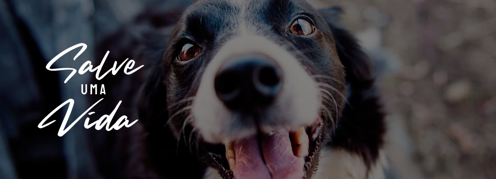

AdoteUmBixo
Ajudando animais a acharem uma casa desde 2014
Por uma década, AdoteUmBixo ajudou a criar uma verdadeira mudança social, trazendo a adoção de animais de estimação para o mainstream. Nosso trabalho ajudou a fazer a diferença para a comunidade de resgate australiana e para milhares de animais de estimação que precisam de resgate e reabilitação. Mas, até que cada animal de estimação esteja seguro, respeitado e amado, todos ainda temos um grande trabalho a fazer. Saiba mais sobre nossa missão de ajudar a salvar 100.000 animais de estimação saudáveis e realojáveis a cada ano.